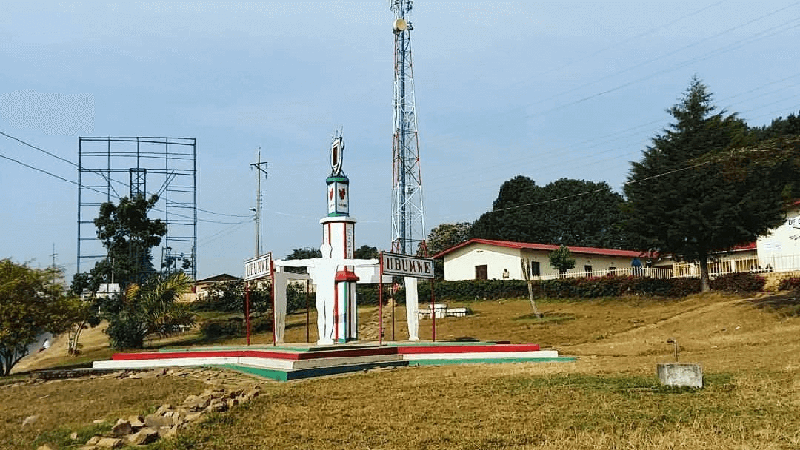
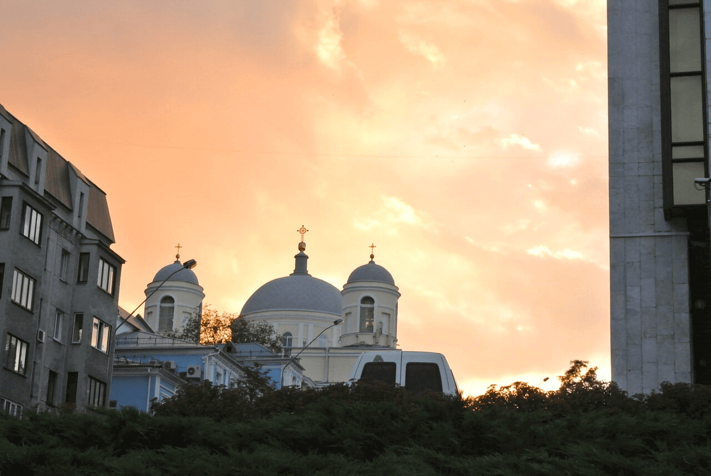
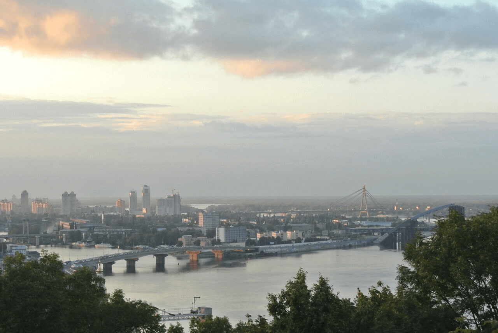
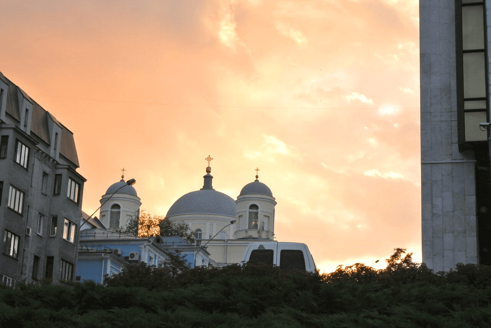
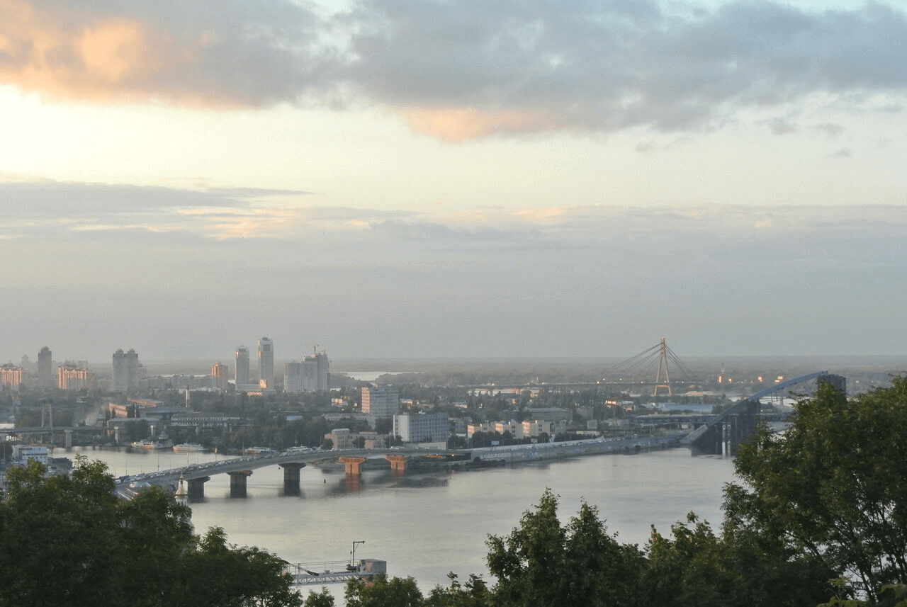

Compra esta obra como NFT
ARTISTAS
Las ruinas medievales del castillo de Cricieth dominan la ciudad
desde una roca que extiende sobre el mar. Se cree que fue
construido por Llewelyn el Grande en el S. XIII. 800 años después,
la autodenominada Perla de Gales en las costas de Snowdonia, se ha
convertido en un popular destino turístico durante los meses de
verano. A pocos pasos de camino al castillo, puedes disfrutar de
los mejores helados del mundo en Cadwalader's, cuyo ingrediente
secreto se rumorea que son algas marinas de la localidad. Otra
cosa por la que es famosa Cricieth es por haber ganado el premio
*Gales en flor* durante cinco años seguidos por sus espectaculares
muestras florales alrededor de la ciudad. También vio nacer a
David Lloyd George, el único galés que ha sido Primer Ministro del
Reino Unido.
Compra esta obra como NFT
ARTISTAS
Berea es una pequeña ciudad ubicada en la parte central de
Kentucky. La ciudad está rodeada por hermosos bosques y campos. Es
conocida como la capital de la artesanía del estado, y sus
visitantes hallarán infinitas posibilidades para ir de compras:
tiendas de joyas, velas y artículos de madera artesanales;
galerías, talleres de vidrio y más. La ciudad celebra un festival
anual que rinde tributo al "spoonbread", un platillo local hecho
de pan de maíz y que se sirve con una cuchara de madera. Aunque,
probablemente es mejor conocida por su universidad. El Berea
College fue fundado en 1855 y fue la primera universidad sureña
integrada racialmente, así como la primera en ser coeducacional.
Algo que en cierta manera la hace única, es que no cobra
colegiatura: cada estudiante recibe una beca del 100%.

Compra esta obra como NFT
ARTISTAS
Muramvya es una de las 18 provincias de Burundi. Durante la época
del reino, Muramvya fue su capital; y en 2017, gracias a su
paisaje cultural y natural, se añadió a la Lista provisional de
patrimonio mundial de la UNESCO. Se encuentra ubicada en el centro
de Burundi, entre las capitales política y económica del país. Su
clima es más bien frío durante la noche, pero durante el día,
podrías pensar que estás en el paraíso. A sus 2,665 metros (8,743
ft) sobre el nivel del mar, el Monte Teza es uno de los lugares
más fríos de la provincia. Pero es justo esa brisa fresca la que
da pie a una de las más grandes plantaciones de té y café del
país, y que representa la mayoría de las exportaciones de Burundi.
El Parque nacional de Kibira, una de las mayores reservas de vida
silvestre para los simios, ocupa parte de cuatro provincias,
incluyendo Muramvya. Este parque nacional se encuentra en las
cúspides de las hermosas montañas de la Divisoria Congo-Nilo,
cuyas alturas oscilan entre 1,550 y 2,660 metros. Está lleno de
hermosa vegetación, y es una fuente para los diversos ríos y
arroyos que proporcionan agua alrededor del país.
Compra esta obra como NFT
ARTISTAS
Veracruz, corazón del Golfo de México
Veracruz es uno de los estados más ricos en historia y cultura de México. Desde la época prehispánica, fue hogar de civilizaciones como la totonaca y la olmeca —esta última considerada la cultura madre de Mesoamérica. Fue también la puerta de entrada de los españoles en 1519, cuando Hernán Cortés desembarcó en sus costas, lo que marcó el inicio de un nuevo capítulo para el país. Hoy en día, esa mezcla de raíces indígenas, africanas y españolas se siente en cada calle, en su música jarocha, su comida picante y alegre, y su gente cálida.
Ubicado en la costa este de México, el estado de Veracruz se extiende desde playas de arena dorada hasta selvas húmedas y montañas imponentes. Su clima varía entre el calor húmedo del litoral y la frescura de las montañas en la región de Xalapa y Orizaba. En este último se alza el majestuoso Pico de Orizaba, también conocido como Citlaltépetl, la montaña más alta de México, con sus 5,636 metros de altura que a menudo se cubren de nieve.
Gracias a su tierra fértil y sus ríos abundantes como el Papaloapan, Veracruz es una potencia agrícola y ganadera. La vainilla de Papantla, el café de Coatepec, y el tabaco de San Andrés Tuxtla son productos reconocidos a nivel internacional. Sus paisajes naturales también han hecho del estado un refugio para la biodiversidad, desde las aves tropicales del sur hasta los bosques nubosos de la zona montañosa central.
Además, Veracruz guarda joyas como el sistema arrecifal veracruzano, uno de los más grandes del Golfo, donde los corales y peces tropicales conviven con restos de barcos antiguos. Y en las celebraciones, el Carnaval de Veracruz es uno de los más grandes y vibrantes del país, lleno de color, música y tradición.

 


